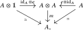
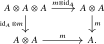
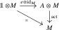
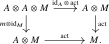
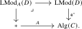
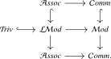
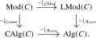

Recall the left module \(\infty \)-operad \(\oLMod \) from Example 12.2.9, Corollary 14.2.6. It has two colors \(\fa \) and \(\fm \), and the full suboperads on these colors are isomorphic to \(\Assoc \) and \(\Triv \), respectively. In particular, restriction along these inclusions gives the associative algebra and the underlying object of its module:
The operations with output \(\fa \) are the associative algebra operations. An operation with output \(\fm \) has exactly one input of color \(\fm \), placed last, and a linearly ordered family of inputs of color \(\fa \). The map \(\oLMod \to \Assoc \) forgets the colors and preserves the ordering of the inputs. Thus an \(\oLMod \)-algebra in a monoidal \(\infty \)-category \(C\) consists of objects \(A,M\in C\) with multiplication maps \(A^{\otimes n}\to A\) and action maps \(A^{\otimes n}\otimes M\to M\), compatibly with operadic substitution.
These definitions generalize those from classical algebra. The nullary operation and the binary operation with its standard ordering give the unit and multiplication maps \[ e\colon \unit \to A \qquadtext { and } m\colon A \otimes A \to A. \] Operadic substitution supplies the unit and associativity identifications in the following diagrams:


This captures the full structure on \(A\) whenever \(C\) is a 1-category, but for general \(C\) the algebra structure further records higher coherences between these identifications.
Similarly, the operation \((\fa ,\fm )\to \fm \) in \(\oLMod \) gives the action map \[ \act \colon A \otimes M \to M, \] which also comes with its unitality and associativity identifications and their higher coherences:


The definition of a module also makes sense when the algebra and its module do not lie in the same \(\infty \)-category: the algebra may lie in a monoidal \(\infty \)-category \(C\), and the module in an \(\infty \)-category \(D\) acted on by \(C\).
Definition 17.1.1 (Left tensored \(\infty \)-categories). Let \(C\) be a monoidal \(\infty \)-category. A left tensoring of an \(\infty \)-category \(D\) over \(C\) consists of an \(\oLMod \)-monoidal \(\infty \)-category, given by a cocartesian fibration of \(\infty \)-operads \(p_D\colon D^{\otimes } \to \oLMod ^{\otimes }\), together with the following identifications:
- An equivalence between \(C\) and the underlying monoidal \(\infty \)-category \(\fa ^*(p_D)\colon \fa ^*(D^{\otimes }) \to \Assoc ^{\otimes }\);
- An equivalence \(D\) and the \(\infty \)-category corresponding to the underlying \(\Triv \)-monoidal \(\infty \)-category \(\fm ^*(p_D)\colon \fm ^*(D^{\otimes }) \to \Triv ^{\otimes }\) under the equivalence \(\Alg _{\Triv }(\Cat _{\infty }) \simeq \Cat _{\infty }\).
We say that \(D\) is left-tensored over \(C\) if it is equipped with such a left tensoring.
The operation \((\fa ,\fm )\to \fm \) induces an action functor \(C\times D\to D\), denoted \((X,M)\mapsto X\otimes M\); the operadic structure supplies its associativity and unit identifications.
Example 17.1.2 (Self-tensoring). By pulling back along the operad map \(\oLMod \to \Assoc \), every monoidal \(\infty \)-category \(C\) is canonically left-tensored over itself, with action given by its tensor product.
Example 17.1.3 (Tensoring on terminal \(\infty \)-category). Sending a tuple of colors to its subtuple of algebra-colored entries defines a finite-product-preserving functor \(r\colon \oLMod ^\otimes \to \Assoc ^\otimes \), left adjoint to the inclusion \(j\colon \Assoc ^\otimes \hookrightarrow \oLMod ^\otimes \): every morphism into an algebra-colored tuple factors uniquely through the projection to this subtuple. Precomposing the functor \(\Assoc ^\otimes \to \Cat _\infty \) encoding a monoidal \(\infty \)-category \(C\) with \(r\) equips \(*\) with a left tensoring over \(C\), since \(r\) sends the module color to the empty tuple. For any left tensoring \((C,D)\) encoded by \(F\colon \oLMod ^\otimes \to \Cat _\infty \), the adjunction unit \(\id \to jr\) induces \(F\to Fjr\), giving a morphism \((C,D)\to (C,*)\) whose components are \(\id _C\) and \(D\to *\).
Example 17.1.4 (Restriction of tensorings). Let \(f\colon C\to C'\) be a monoidal functor and let \(D\) be left-tensored over \(C'\). Then \(D\) is left-tensored over \(C\) by \(X\otimes _f M:=f(X)\otimes M\). To construct this coherently, denote the given tensoring by \((C',D)\) and use the terminal tensorings of Example 17.1.3 to form the pullback \[ (C,*)\times _{(C',*)}(C',D) \] in \(\Alg _{\oLMod }(\Cat _\infty )\), with \(\Cat _\infty \) cartesian monoidal. Via the description by finite-product-preserving functors \(\oLMod ^\otimes \to \Cat _\infty \), this pullback is computed pointwise. Its values at the algebra and module colors are \(C\) and \(D\), respectively, and its action is the one displayed above.
Definition 17.1.5 (Left modules). Let \(D\) be left-tensored over a monoidal \(\infty \)-category \(C\), and write \(\LMod (D):=\Alg _{\oLMod }(D)\) and \(\Alg (C):=\Alg _{\Assoc }(C)\). Restriction along \(\fa \) defines a functor \(\fa ^*\colon \LMod (D)\to \Alg (C)\). For an associative algebra \(A\in \Alg (C)\), we define the \(\infty \)-category \(\LMod _A(D)\) of left \(A\)-modules in \(D\) by the pullback square

For \(C\) left-tensored over itself as in Example 17.1.2, we write \(\LMod (C)\) and \(\LMod _A(C)\). Note that a left \(A\)-module in \(C\) amounts to an operad map \(\oLMod \to \Mm _C\) whose restriction to \(\Assoc \) is identified with \(A\).
Remark 17.1.6. Suppose that \(C\) is symmetric monoidal. To define modules over commutative algebras, we replace \(\oLMod \) by its commutative version \(\oMod \) from Example 12.2.8. These \(\infty \)-operads fit into a commutative diagram:

In particular, restriction along the inclusion \(\Comm \hookrightarrow \oMod \) defines a forgetful functor \(\Mod (C) := \Alg _{\oMod }(C) \to \CAlg (C)\), allowing us to define an \(\infty \)-category \(\Mod _A(C)\) for every commutative algebra \(A\) in \(C\). It turns out this \(\infty \)-category only depends on the underlying associative algebra of \(A\):
Proposition 17.1.7. Let \(C\) be a symmetric monoidal \(\infty \)-category. Then the following commutative square is a pullback square:

In particular, passing to vertical fibers over \(R \in \CAlg (C)\) induces an equivalence \[ \Mod _R(C) \iso \LMod _{R'}(C), \] where we denote the underlying associative algebra of \(R\) by \(R'\).
Proof. By Glasman (2014), Proposition 7, our commutative module \(\infty \)-operad recovers Lurie’s \(\infty \)-category of modules over commutative algebras. The pullback description is then [Lurie (2017), Corollary 4.5.1.6]. □
17.1.1 Unit algebras
The monoidal unit carries a canonical associative algebra structure, which is commutative when \(C\) is symmetric monoidal. Modules over this algebra are simply objects of the original \(\infty \)-category, as we will see after constructing free modules. The algebra structure is a special case of the following construction for unital \(\infty \)-operads.
Definition 17.1.8. An \(\infty \)-operad \(\Oo \) is called unital if its total \(\infty \)-category \(\Oo ^{\otimes }\) is pointed, i.e., if the terminal object (given by the empty tuple \(\emptyset _{\Oo } := \{\}\)) is also an initial object. Equivalently, \(\Oo \) is unital if we have \[ \Oo (\{\};x) \simeq * \] for every color \(x \in \Oo ^{\simeq }\).
Example 17.1.9. The \(\infty \)-operads \(\Comm \), \(\Assoc \) and \(\Ee _k\) are unital. The \(\infty \)-operads \(\Triv \), \(\oMod \) and \(\oLMod \) are not unital.
Definition 17.1.10. Let \(\Oo \) be a unital \(\infty \)-operad and let \(C\colon \Oo ^{\otimes }\to \Cat _{\infty }\) be an \(\Oo \)-monoidal \(\infty \)-category. For each color \(x\), the unique nullary operation of \(\Oo \) gives a functor \[ \unit _x\colon *\simeq C(\{\})\longrightarrow C_x. \] We call the corresponding object \(\unit _x\in C_x\) the unit at the color \(x\).
For an \(\Oo \)-algebra \(A\), factoring its nullary operation at \(x\) through cocartesian transport gives a unit map \(\unit _x\to A_x\). The units \(\unit _x\) themselves assemble into an \(\Oo \)-algebra, which we denote by \(\unit _C\).
Proposition 17.1.11 ([Lurie (2017), Proposition 3.2.1.8 and Lemma 3.2.1.10]). Let \(\Oo \) be a unital \(\infty \)-operad and let \(C\) be an \(\Oo \)-monoidal \(\infty \)-category. Then \(\unit _C\) is initial in \(\Alg _{\Oo /\Oo }(C)\). An \(\Oo \)-algebra \(A\) is initial if and only if its unit maps \(\unit _x\to A_x\) are isomorphisms for all colors \(x\).
The characterization by initiality uses operadic left Kan extensions, which we do not develop here. The construction of \(\unit _C\) itself is short; we follow [Hebestreit and Wagner (2021), Lemma II.45a]. Applying \(C\colon \Oo ^{\otimes }\to \Cat _{\infty }\) to the natural transformation \(\const _{\emptyset _{\Oo }}\to \id _{\Oo ^{\otimes }}\) supplied by the initial object gives a natural transformation \(\const _*\to C\), since \(C(\emptyset _{\Oo })\simeq *\). By straightening, this defines a cocartesian section of \(p_C\). Its value at a tuple \(\{x_i\}_{i\in I}\) is \(\{\unit _{x_i}\}_{i\in I}\), compatibly with the projections, so it preserves finite products and defines the required algebra.
Corollary 17.1.12 ([Lurie (2017), Corollary 3.2.1.9]). Let \(C\) be a symmetric monoidal \(\infty \)-category. Then a commutative algebra \(R\) is initial in \(\CAlg (C)\) if and only if the unit map \(e\colon \unit \to R\) is an isomorphism in \(C\). In particular, the underlying object of the commutative algebra \(\unit _C \in \CAlg (C)\) from Proposition 17.1.11 is the monoidal unit of \(C\). □
Remark 17.1.13. The unit-algebra result extends to a morphism \(p\colon \Pp \to \Oo \) of \(\infty \)-operads, with \(\Oo \) unital, provided that for each color \(x\) of \(\Oo \) there is a color \(\unit _x\) of \(\Pp \) over \(x\) and a nullary operation \(e_x\colon \{\}\to \{\unit _x\}\) such that \[ e_x\times \id _Z\colon Z\longrightarrow \{\unit _x\}\times Z \] is \(p^{\otimes }\)-cocartesian for every tuple \(Z\in \Pp ^{\otimes }\). This is the operadic unit condition of [Lurie (2017), Definition 3.2.1.1]: the nullary operation must have its universal property also in the presence of additional inputs. For an \(\Oo \)-monoidal \(\infty \)-category, this follows from the compatibility of cocartesian transport with concatenation.
Under this hypothesis, the units assemble into an initial operad section of \(p\), and a section is initial precisely when its unit maps are isomorphisms; see [Lurie (2017), Proposition 3.2.1.8 and Lemma 3.2.1.10]. Thus the construction only requires these universal nullary operations, even if higher-arity tensor products are not represented. Having such units does not mean that \(\Pp \) is unital: that would require every nullary-operation anima to be contractible.
17.1.2 Free modules
Let \(A\) be an ordinary associative ring and let \(M_0\) be an abelian group. Multiplication on the first factor turns the tensor product of abelian groups \(A\otimes M_0\) into a left \(A\)-module. It is the free \(A\)-module on \(M_0\) relative to the forgetful functor to abelian groups: restriction along the map \(M_0 \to A \otimes M_0, \; m\mapsto 1\otimes m\) gives a natural bijection \[ \Hom _A(A \otimes M_0,N)\iso \Hom _{\Ab }(M_0,N). \]
This admits the following \(\infty \)-categorical refinement:
Proposition 17.1.14 ([Lurie (2017), Proposition 4.2.4.2, Corollaries 4.2.4.4 and 4.2.4.8]). Let \(C\) be a monoidal \(\infty \)-category and let \(D\) be an \(\infty \)-category left tensored over \(C\).
- (1)
-
The forgetful functor \(\LMod (D) \xrightarrow {(\fa ^*,\fm ^*)} \Alg (C) \times D\) admits a left adjoint \[ F\colon \Alg (C) \times D \to \LMod (D), \qquad (A,M_0) \mapsto F_A(M_0) \] satisfying \(\fa ^*F_A(M_0) \simeq A\) and \(\fm ^*F_A(M_0) \simeq A \otimes M_0\).
- (2)
-
For an associative algebra \(A \in \Alg (C)\), the forgetful functor \(\fm ^*\colon \LMod _A(D) \to D\) admits a left adjoint \[ F_A\colon D \to \LMod _A(D), \] where the underlying object of \(F_A(M_0)\) is \(A \otimes M_0\).
As a consequence, we may deduce that modules over a trivial algebra are simply objects of \(D\):
Corollary 17.1.15 ([Lurie (2017), Proposition 4.2.4.9]). Let \(C\) be a monoidal \(\infty \)-category and let \(A \in \Alg (C)\) be an algebra object such that the unit map \(e\colon \unit \to A\) is an isomorphism in \(C\). Then for every left \(C\)-tensored \(\infty \)-category \(D\) the forgetful functor \(\LMod _A(D) \to D\) is an equivalence of \(\infty \)-categories.
Proof. By Proposition 17.1.14, the forgetful functor admits a left adjoint \(F_A\). The unit \(M_0\to A\otimes M_0\) is obtained by tensoring \(e\) with \(M_0\), so it is an isomorphism. The triangle identity identifies the underlying counit with the inverse of the unit at the underlying object. Since the forgetful functor is conservative, the counit is also an isomorphism. □
17.1.3 Limits and colimits of modules
Limits of modules are computed on their underlying objects. The same holds for colimits whenever the action preserves them.
Proposition 17.1.16 ([Lurie (2017), Corollaries 4.2.3.3 and 4.2.3.5]). Let \(C\) be a monoidal \(\infty \)-category, let \(D\) be left-tensored over \(C\), and let \(A\in \Alg (C)\). Let \(\fm ^*\colon \LMod _A(D)\to D\) be the forgetful functor, and let \(I\) be a small \(\infty \)-category.
- (1)
-
If \(D\) admits \(I\)-indexed limits, then \(\fm ^*\) creates and preserves \(I\)-indexed limits.
- (2)
-
If \(D\) admits \(I\)-indexed colimits and the functor \(X\otimes -\colon D\to D\) preserves \(I\)-indexed colimits for every \(X\in C\), then \(\fm ^*\) creates and preserves \(I\)-indexed colimits.
Proof. For (1), the functor \(\Fun (I,-)\colon \Cat _\infty \to \Cat _\infty \) preserves finite products and is therefore symmetric monoidal for the cartesian structures. It sends the given left tensoring to a left tensoring of \(\Fun (I,D)\) over \(\Fun (I,C)\); restriction along \(\const _I\colon C\to \Fun (I,C)\) as in Example 17.1.4 then gives \(\Fun (I,D)\) the pointwise left tensoring over \(C\). The symmetric monoidal natural transformation \(\const _I\colon \id _{\Cat _\infty }\to \Fun (I,-)\) induces a morphism of the corresponding \(\oLMod \)-algebras in \(\Cat _\infty \), which factors through this pullback to give the \(\oLMod \)-monoidal functor \((\id _C,\const )\colon (C,D)\to (C,\Fun (I,D))\). Since \(\const \) has right adjoint \(\lim _I\), Proposition 14.6.8 equips the pair \[ (\id _C,\lim _I)\colon (C,\Fun (I,D)) \to (C,D) \] with the right-adjoint lax \(\oLMod \)-monoidal structure. Passing to \(\oLMod \)-algebras and taking the fiber over \(A\) therefore gives an adjunction \[ \const \colon \LMod _A(D) \rightleftarrows \LMod _A(\Fun (I,D)) \simeq \Fun (I,\LMod _A(D)) \noloc \lim _I. \] The underlying object of the right adjoint is the limit in \(D\). Thus \(\fm ^*\) preserves these limits. Conversely, a cone of \(A\)-modules whose underlying cone is a limit cone in \(D\) maps to the limit just constructed by an underlying isomorphism. Since \(\fm ^*\) detects isomorphisms, this is an isomorphism of modules. Hence \(\fm ^*\) also creates these limits.
For (2), we instead use the left adjoint \(\colim _I\) of \(\const \). By assumption, the canonical maps \[ \colim _{i\in I}(X\otimes M_i)\longrightarrow X\otimes \colim _{i\in I}M_i \] are isomorphisms for every \(X\in C\). In particular, the hypothesis of Proposition 14.6.9 is satisfied for \(\Oo =\oLMod \): on the algebra color the left adjoint is \(\id _C\), and operations with several algebra inputs reduce to the displayed maps by taking their tensor product. Thus \((\id _C,\colim _I)\) is an \(\oLMod \)-monoidal left adjoint to \((\id _C,\const )\). As in (1), passing to algebras and taking the fiber over \(A\) produces an adjunction \[ \colim _I\colon \Fun (I,\LMod _A(D))\rightleftarrows \LMod _A(D)\noloc \const . \] Its underlying functor takes colimits in \(D\), so \(\fm ^*\) preserves these colimits. The same argument as in (1), with cocones in place of cones, shows that it also creates them. □
Proposition 17.1.17. Let \(D\) be left-tensored over a monoidal \(\infty \)-category \(C\). Suppose that \(D\) is presentable and \(X\otimes -\colon D\to D\) preserves small colimits for every \(X\in C\). Then, for every \(A\in \Alg (C)\), the \(\infty \)-category \(\LMod _A(D)\) is presentable, and its forgetful functor to \(D\) creates limits and small colimits.
Proof. Presentability is [Lurie (2017), Corollary 4.2.3.7]. The assertions about limits and colimits follow from Proposition 17.1.16. □
Corollary 17.1.18. Let \(C\) be a monoidal \(\infty \)-category whose underlying \(\infty \)-category is stable and whose tensor product preserves finite colimits separately in both variables. For every associative algebra \(A\in \Alg (C)\), the \(\infty \)-category \(\LMod _A(C)\) is stable.
Proof. By Proposition 17.1.16, the forgetful functor \(\LMod _A(C)\to C\) creates and preserves finite limits and colimits. Thus \(\LMod _A(C)\) has a zero object, and a commutative square in \(\LMod _A(C)\) is a pullback if and only if it is a pushout, since this may be checked in \(C\). Hence \(\LMod _A(C)\) is stable. □
Remark 17.1.19. The limit and colimit statements of Proposition 17.1.16 also apply to individual diagrams. A diagram of \(A\)-modules admits a limit whenever its underlying diagram in \(D\) does, and the forgetful functor creates this limit. Likewise, it creates a colimit whenever the underlying diagram admits a colimit preserved by \(X\otimes -\) for every \(X\in C\). See [Lurie (2017), Corollaries 3.2.2.3 and 4.2.3.5].